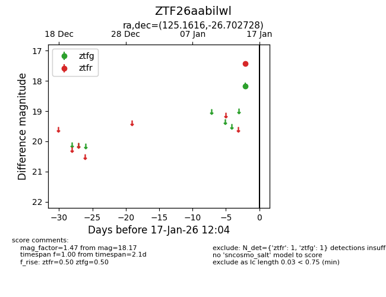
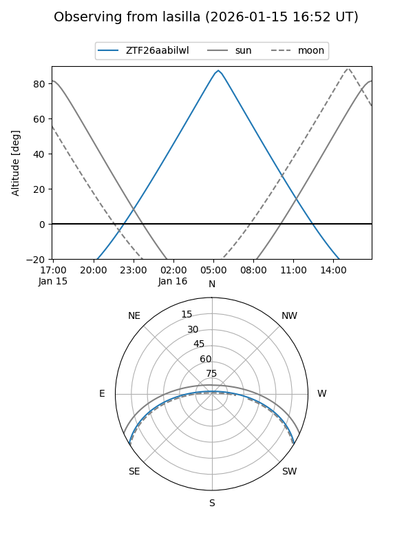
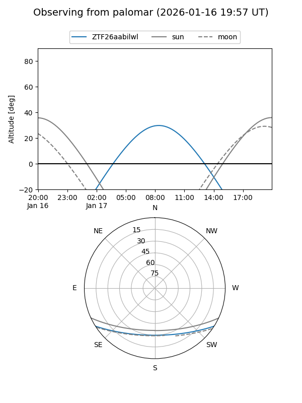

ZTF26aabilwl
Target ZTF26aabilwl at 2026-01-17 12:05
Aliases and brokers:
FINK: link
Lasair: link
ALeRCE: link
alt names
ZTF26aabilwl (ztf,fink_ztf)
Coordinates:
equatorial (ra, dec) = 125.1616,-26.70273
equatorial (HMS+DMS) = 08:20:38.79,-26:42:09.82
galactic (l, b) = (246.7895,+5.55612)
Flags:
Photometry:
last ztfg=18.17, ztfr=17.43
1 ztfg, 1 ztfr detections
Lightcurve

Visibility


Additional plots